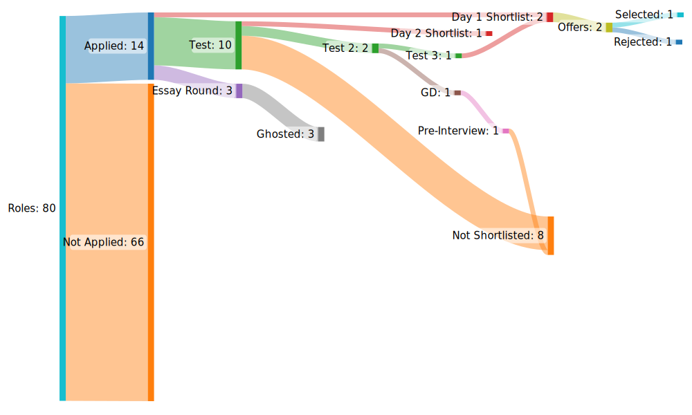

Intern Inferno
Posted on Sun 14 August 2022 in General
Not everything goes exactly as planned. That's why it's a plan, not a certainty.
Aiming in
Before this entire joomla started, I asked myself: What is it I want from an intern?
- I wanted to tour: I didn't pick up a foreign research intern this summer, and was tired of hearing/seeing how others were roaming the world while I was scooping shuttles off the floor of my room.
- I wanted something that paid well: Apart from the feel-good factor, a good paying intern would put money for my masters' in the bank
Above both of these:
- I wanted something that would help me in the future: Research or core CS/Math roles would provide both relevant work experience and also appeal to universities when I go for my Masters. I definetly didn't want to pick up finance/consulting/enterprise/backend/frontend development.
- I wanted something fun: Writing high-stakes trading algorithms, making hyper-efficient and superfast systems on embedded devices, implementing object recognition on embedded sensors, receiving patents/publishing papers on new models and algorithms is a small but representative subset of the kind of work I wanted to do this summer.
Another way of looking at this is saying no: proceed by elimination rather than addition. This requires knowing yourself very well, and seeing if a role really resonates with what you want to do. Eg if you're a product person and have worked in programming clubs, developing systems, then a SDE role would appeal to you. Don't apply to anything other than SDE.
With this in mind, I built up a small shortlist of companies to apply to. Mostly quant and research roles.
Bluffington, but with higher stakes
Intern season this time formally started off in early July, when talks were held by the Office of Career Services and the resumé portal opened for a short while (albeit there were several deadline extensions). For context, your OCS CV is what companies would shortlist you based on, and for everything you wrote on there, proof was required. I didn't have much to put on it except a large number of projects, some acad achievements and some volunteer experience, and I believe that's more than enough for a Tech CV (where shortlisting is mostly done either through CG or through your performance in some arcane test that the company conjures). Just be completely aware of what you're putting in there, and what each project was: the CV is used for HR/Face to face interviews, and you'll probably be quizzed on atleast a couple domains where you've done projects. And please, please, don't bluff.
PS: this is only relevant to tech/research roles. I have no idea what makes a good finance/consult CV.
The Dance of Dragons
Companies started with their Pre-Placement Talks from the 19th (?): Higher paying ones went first, and it was a mixed bag. Some were lackluster, and some were brilliant. Soon after which, applications opened up.
I think the most important thing here is to Stick to your list: You'll see friends and most people applying to absolutely everything and anything in the hopes that an intern will materialize somewhere. There are multiple downsides to this:
- Too many tests will tire you out
- Even if you clear all the tests and are shortlisted for interviews from multiple companies, there are only so many Day 1 slots that OCS will allocate to you (I think 4 is the upper limit), so even if you want to, you can't sit everywhere.
On the other hand, this does require a lot of tenacity and self-belief, and a good CG/plenty of skill as well. There's no one right answer, just make sure you don't switch your strategy out of desperation midway (eg go through your list, then realize that if there are too many companies open and your chances are low, apply to all of them, or vice versa). Go in with a plan, and try to stick to it as much as possible from your end, because you can't control what happens outside.
Longlists
After applications, shortlists for tests begin to arrive. Companies have free will in how they'll shortlist people: some are very transparent, and some are opaque to the point of being devious. The test processes for some of the most wanted companies spans multiple tests rather than just one, so keep an eye out on that as well. Also, while OCS will do their best to avoid test slot clashes, you will become a walking zombie if you take too many or, in the worst case, will have a bunch of slot clashes. Combined with 8am offline classes and 11pm tests, just don't push yourself by applying to as many companies as you can. Just don't.
Another aspect is to not be disappointed if you don't make a test shortlist: it's probably just a random thing (unless there are clear patterns such as a CG cutoff), and you shouldn't beat yourself up about it. Learning to not let these things affect you is hard, but an important learning nevertheless.
Tests and shortlists
Ah, the tests. Probably my least favourite part, because unless you're super amazing at the test, there's a complete black box behind the outcome (how well your test went) and the interview shortlist
- A test I gave where I thought I'd done pretty well (there was a monte carlo approximation problem that I did nicely), didn't result in a shortlist. Others (who didn't do this problem) got shortlisted.
- A test where I thought I'd done poorly resulted in me getting a shortlist
- A test where I'd done decent made no difference, because company in question just shortlisted CS DR 1-7, and two people who'd blasted their test to shreds
- A company which gave a test to a majority of their shortlist and an interview to a minority, had a significant % acceptance difference between the two methods of testing. Clearly, one was better than the other. Sadly I pulled the short straw here, and didn't make it.
- A company which had multiple rounds of tests, and finally a pre-interview, completely roasted me in the pre-interview, while several others said that they'd found their pre-interview to be very chill. They got shortlisted, while I didn't.
Also, most companies won't have tests that are relevant to the work you'd be doing at the company. It's mostly a bunch of CP questions (gets harder for more valuable companies), and if you're in quant, some math MCQ's. Very few companies invest a lot of time and effort in the kind of questions they ask/the processes they take, and it's a pleasure in some sense to give those tests. Also, if the test is too easy, there is no differentiator between you and someone
This is probably where the completely stochastic nature of life comes face-to-face with you: The stochasticity of the outcome is inversely proportional to your skill, and the only way to minimize it is to be an order-of-magnitude better than everyone else. Or, just get lucky.
This has two important implications: - If you got rejected, it doesn't mean that you're worse than the others who got shortlisted. - If you got shortlisted, it doesn't mean that you're better than the others who got rejected.
A very skilled (and very humble) friend keeps saying Tukke pe jee raha hu mai (I'm living on a fluke) whenever praised for his skills, and it's a brilliant thing to do: accept the universe is larger than you and be grateful for it's outcomes. That way, you're always humble and happy.
Preference Filling
In all things, have no preferences. ~ Miyamoto Musashi
This should be a no-brainer by this point. However, more context: Quant got into a bidding war over Talent, with multiple raises: I don't want to quote exact numbers here, but there was an almost 50% increase in the stipend offered, and they were already offering a lot. In addition, Quant companies with foreign bases leveraged their position to offer foreign roles as well, paid in GBP/SGD, which would be a no-brainer for most1. Unfortunately, when I started, this was not there and some of these companies didn't make my shortlist, but for others, if the goalposts change and if you had them in your shortlist, now would be a good time to realistically reconsider where you want to go.
Another note about Day 1 and Day 2: The placement system here works to ensure that the maximum number of people get an intern the quickest. As a result, internships are spread across two days, and if you get an offer on Day 1, you're out of contention in Day 2. Most core/research companies come in on Day 2 (Day 1 is quant/finance/consult/SDE mostly, because they pay the most), and if your heart is set on core/research, it's safest to skip Day 1.
Also, keeping in line the above quote, if you do get shortlisted for a Day 1 company which is worse than a Day 2 company, it's sad, but there's not much you can do. Just remember to have fun when you go for the intern!
Faceoff
So you're walking in for interviews, sharply dressed, with your resume/CV in hand. What now? It's easy to say "Just be cool", but very hard to do. I think the most important thing is to go with the flow and be yourself, atleast in tech. And remember to keep it simple: start off with the simplest solution you can think of, then layer in complexity. In an interview, emphasis is on communication and clarity of thought rather than complexity, and if you're starting off simple, it's much easier to hook in your interviewer and keep him in your thought process rather than starting off complex and trying to break down complexity to explain to him (mostly because they anyway have a more complex problem, which they'll spring upon you once you solve the simple problem correctly).
What now?
So your interviews are over, and you're waiting at your hostel room, playing cards and biding time till your offer comes in. Several others have received on-the-spot offers, and you've been told by all your interviewers that you'll "get to know via your placement cell". Someone pings you asking if you got the offer, because XYZ got it now, and you run to your laptop and load the portal. What does your next LinkedIn post say?
drumrolls
I'm pleased to announce that I'll be joining ...I'm pleased to announce that I'll be joining Optiver at their Amsterdam office next summer as a Software Engineering Intern. I'll be working on optimizing their low-latency systems and finding out what goes into the tech that makes one of the world's leading market makers tick.
</linkedin post>
Truth be told, it's not as simple as this. Never is. Here's a small sankey diagram I made of how the entire process unfolded

I had two shortlists and ended up converting both, and I really enjoyed the interview processes in both the companies I applied to. Very kind and very smart interviewers, very cool people overall. Would've loved to send one half of me to each company, but unfortunately that's not possible :')
Some resources I used for Quant Prep can be found here.
There's a lot that's not been talked about here: Diversity hiring, Waitlists, Walk-ins and Day 2 chaos. There are a few (several?) more nuances in placements, but with my experience here, one thing is pretty certain: I'm not sitting for placements. It's a better investment of time and energy to work on a nice BTech Project, and focus on the near future
All the best, and happy intern hunting!
Footnotes
1That's not all they did. Some invited their shortlist to dinner, some handed out t-shirts to their shortlist, some sent out emails inviting their shortlist to WA groups where they can ask anything about the company, and so on and so forth.